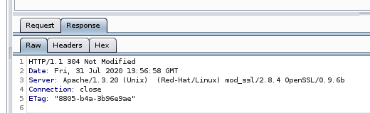

80/443-192.168.50.129 -6:06pm
Default webpage - Apache - PHP
Infgormation Disclosure-404 page

Information Disclosre - Server headers disclose version information

80/tcp open http Apache/1.3.20 (Unix) (Red-Hat/Linux) mod_ssl/2.8.4 OpenSSL/0.9.6b
+ mod_ssl/2.8.4 - mod_ssl 2.8.7 and lower are vulnerable to a remote buffer overflow which may allow a remote shell. http://cve.mitre.org/cgi-bin/cvename.cgi?name=CVE-2002-0082, OSVDB-756.
SMB
Unix (Samba 2.2.1a)
Webalizer Version 2.01- http://192.168.50.129/usage/---did find explots for this
SSH
Open SSH 2.9p2 --did find good explotis for this like red marked in cv site